The Mediterranean way of eating
Olive oil, vegetables, whole grains, legumes, and fish — plus the unhurried meals and daily walks that make the pattern work. Guides and tools to help you begin.
Free Tools
Mediterranean Diet Score
Answer the 14 questions below. Each yes is one point; a higher score means your eating is closer to the traditional Mediterranean pattern.
Olive Oil Guide
Choose a use and find the right olive oil for it.
Daily Calorie Calculator
Uses the Mifflin-St Jeor equation: BMR from weight, height, age, and sex, multiplied by an activity factor to give your total daily energy expenditure (TDEE).
Weekly Meal Planner
A simple seven-day Mediterranean meal plan.
Seafood and Fish Guide
Pick a fish and learn how to cook it, plus how often to eat it.
Guides
 Mediterranean Diet Basics
Mediterranean Diet BasicsWhat the Mediterranean diet really is, why it is studied so much, and how to start.
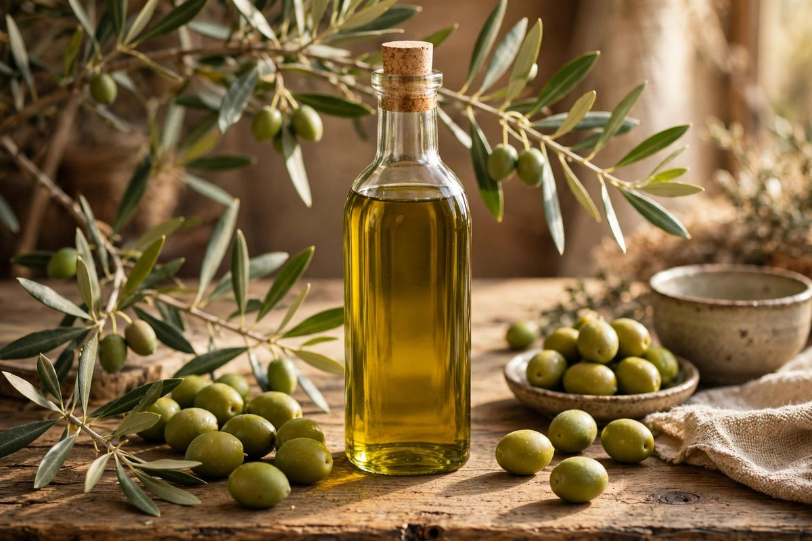
Olive Oil GuideHow to choose, use, and store olive oil — grades, smoke points, and everyday tips.
 Whole Grains
Whole GrainsBarley, farro, bulgur, oats, and wholewheat — how Mediterranean grains work in daily meals.
 Seafood
SeafoodFish and seafood in the Mediterranean diet: which to eat, how often, and how to cook it.
 Legumes and Beans
Legumes and BeansLentils, chickpeas, and beans — the affordable protein at the heart of Mediterranean cooking.
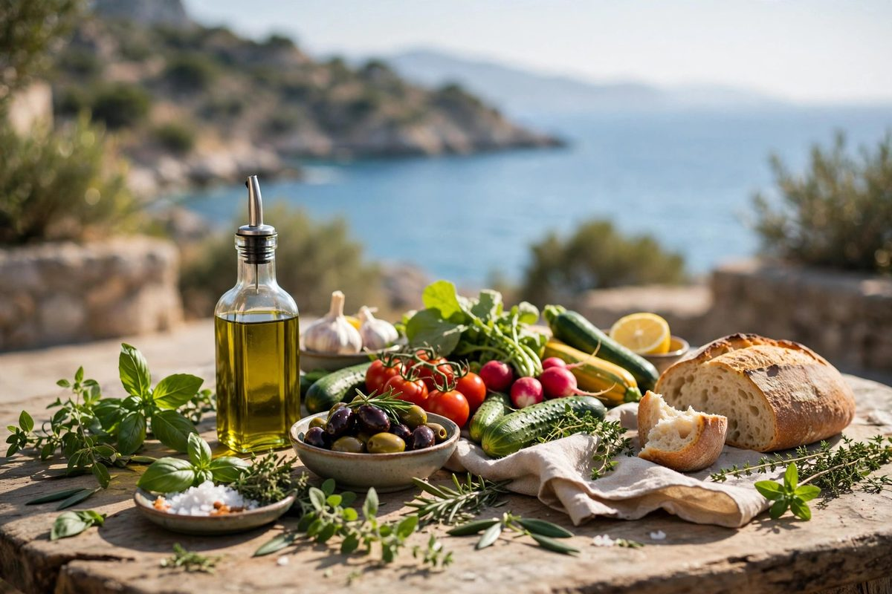
Mediterranean LifestyleBeyond food: slow meals, movement, rest, and community in the Mediterranean way of life.
 Mediterranean Breakfast
Mediterranean BreakfastHow the Mediterranean starts the day: yoghurt, fruit, eggs, bread, and olive oil.
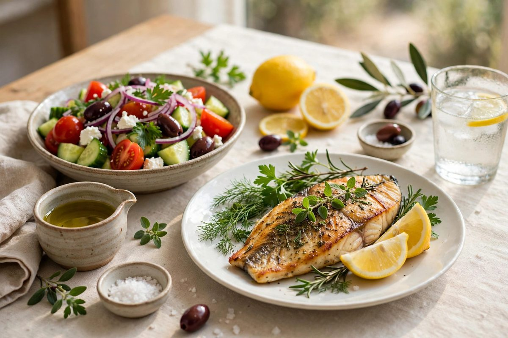
Mediterranean LunchThe main meal of the Mediterranean day: salads, soups, beans, and the art of the long lunch.
 Mediterranean Dinner
Mediterranean DinnerLight, late Mediterranean dinners: grilled fish, vegetables, soups, and family meals.
 Mediterranean Snacks
Mediterranean SnacksHealthy Mediterranean snacks: olives, nuts, fruit, yoghurt, and mezze for any time of day.
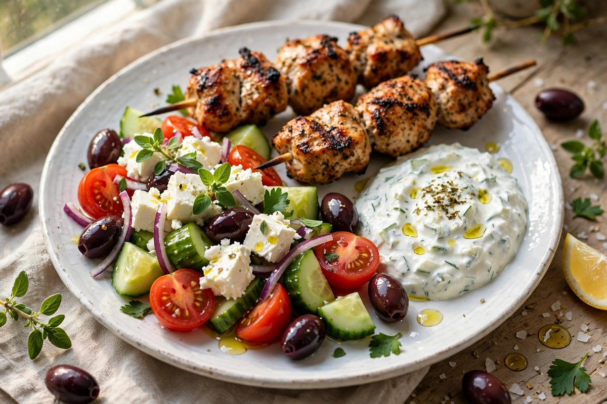
Greek RecipesClassic Greek recipes: moussaka, souvlaki, Greek salad, spanakopita, and tzatziki.
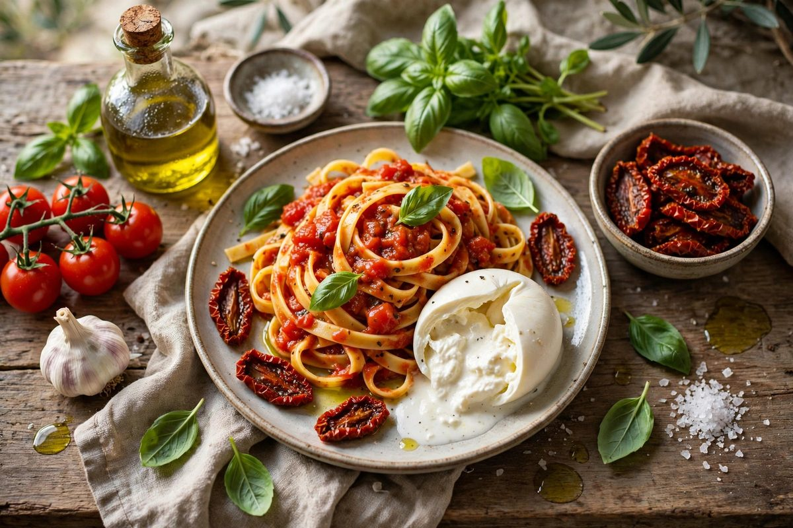
Italian Mediterranean RecipesClassic Italian Mediterranean dishes: pasta, risotto, bruschetta, minestrone, and grilled fish.
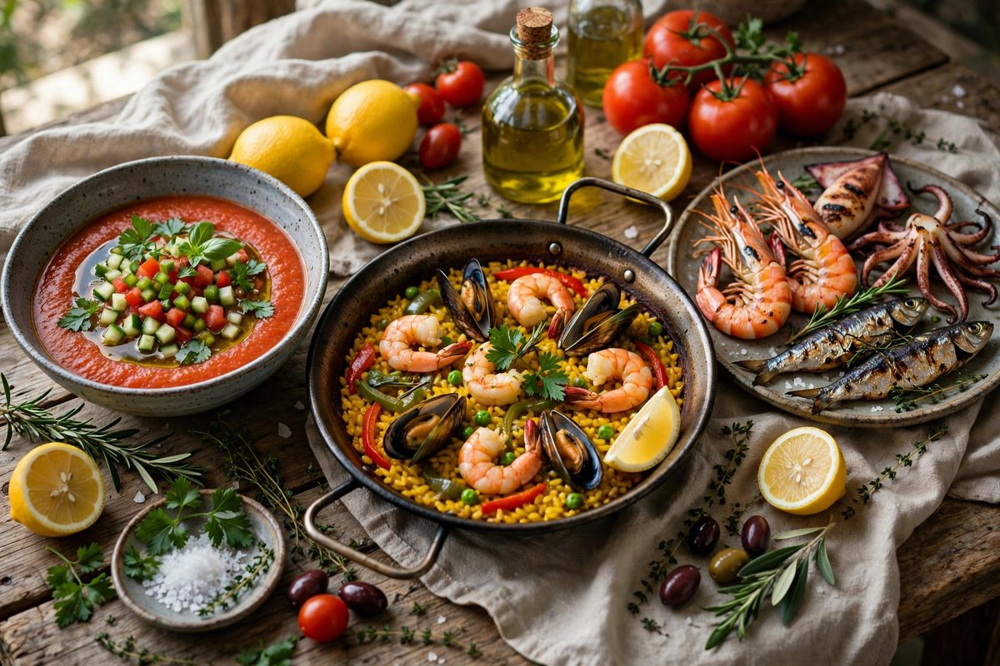
Spanish Mediterranean RecipesClassic Spanish Mediterranean dishes: paella, gazpacho, tortilla, patatas bravas, and tapas.
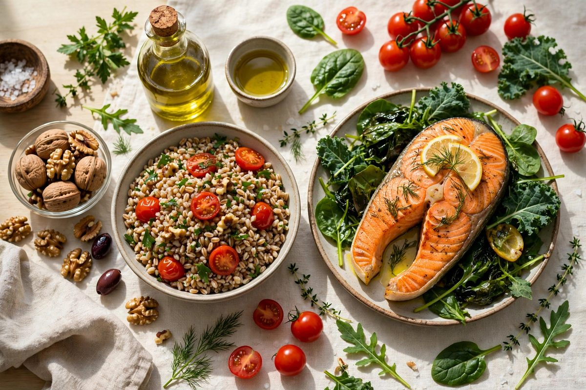
Mediterranean Diet and Heart HealthHow the Mediterranean diet protects the heart: evidence, mechanisms, and practical steps.
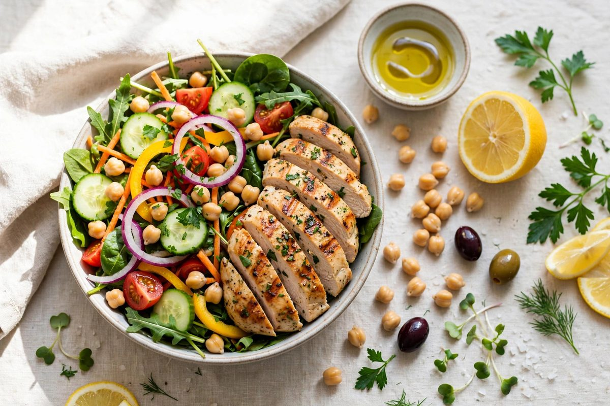
Mediterranean Diet for Weight LossLosing weight the Mediterranean way: portions, protein, and habits that keep it off.
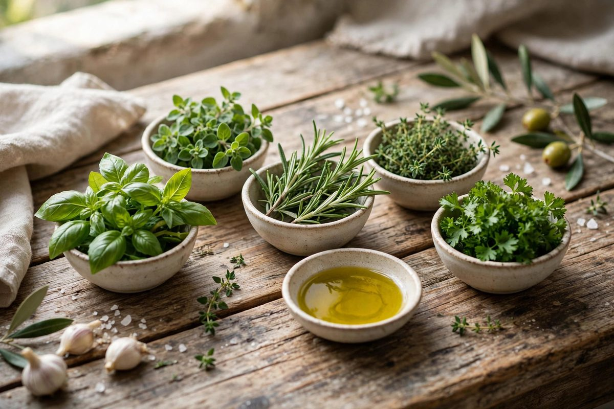
Mediterranean HerbsBasil, oregano, rosemary, thyme, and more — how to use Mediterranean herbs in everyday cooking.
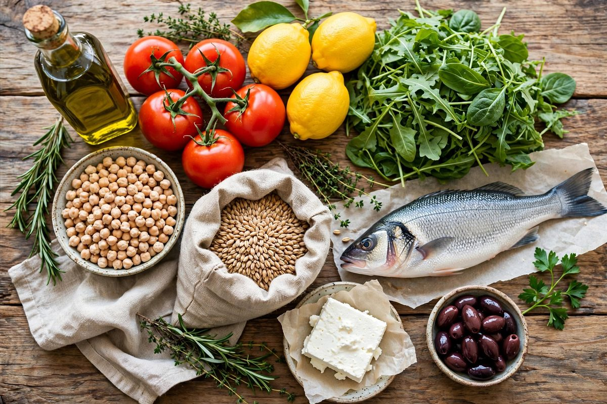
Mediterranean Diet Shopping ListA complete Mediterranean shopping list by aisle, plus pantry staples and what to skip.
 Mediterranean Diet for Beginners
Mediterranean Diet for BeginnersStarting the Mediterranean diet: the first month, simple swaps, and a week-one plan.
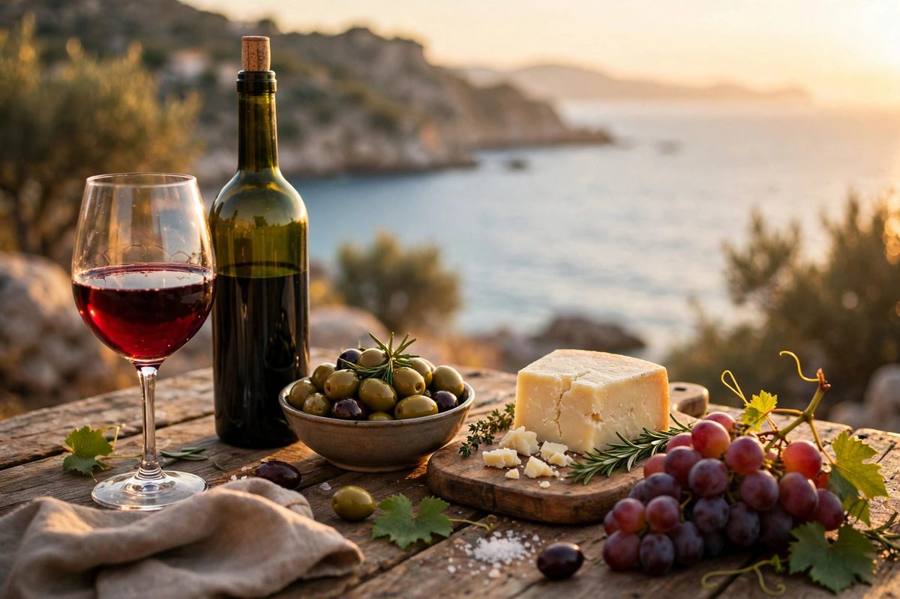
Wine in the Mediterranean DietWine in the Mediterranean tradition: moderation, meals, and what the evidence actually says.
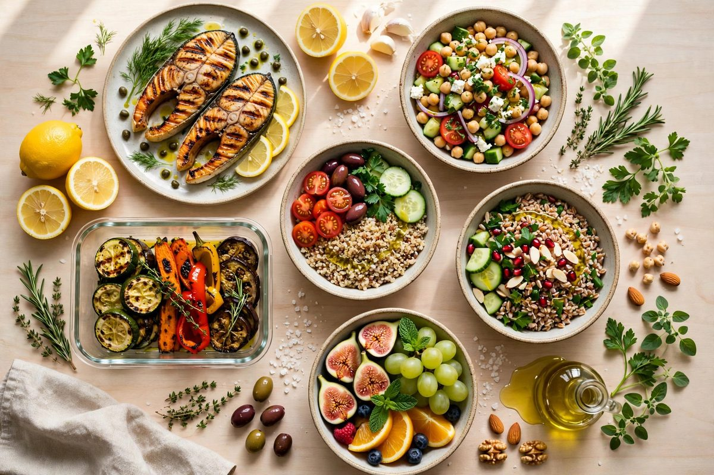
Mediterranean Diet Meal PlanA complete 7-day Mediterranean meal plan with breakfast, lunch, and dinner for each day.